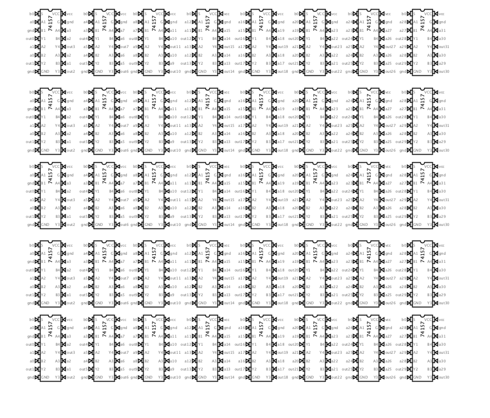

Dispatch · Datapath
Multiply in four cycles. Divide is the trick.
74xx284/85 can do the low and high products. Sequence them and 32 × 32 → 64 finishes in four cycles at most. Division still wants an algorithm that is not an eternity.
Today's goal is integrating the multiply-divide engine. 74xx284/85 can compute the lower and upper products, so I will use them and sequence to compute 32b by 32b into 64b in four cycles at most. That cleanly resolves multiply. The immediate decoder means the multiply has access to the immediate variants most ISAs expect.
The divide is tricky, generally. I am considering Newton-Raphson for approximation and refinement. Other options: find 1/b, then reuse the multiply block. A magic number computed at assembly defeats the purpose of live divide.
If I use a lookup table, luckily the ALU plus micro-opcode is a powerful LUT I can take advantage of. I will explore the most efficient algorithm and reuse components as much as possible.
There is a barrel shifter which could be used in a naïve subtract-and-conditional-shift. That will take an eternity from a CPU perspective. By end of day I will settle for one, tentatively.

Fig. — Forty 74157sThe shifter the naïve divide would abuse